There are many resources and relevant content we have captured from our clients and our users using our mobile app and adapting on our special wesbsites, hereafter we need some comments from our clients to be better during time. Specially, with prices, offers, feautres, promos, and in fact behaviour from our clients
 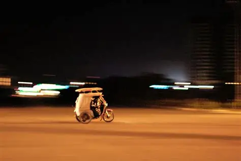
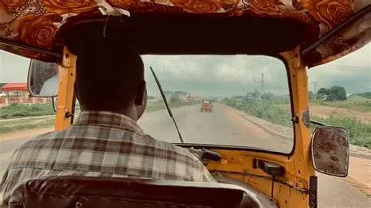
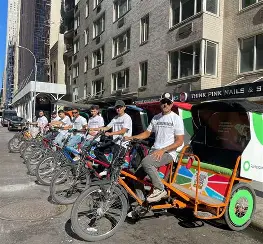
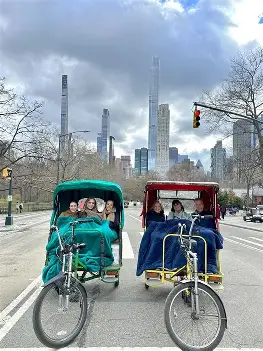
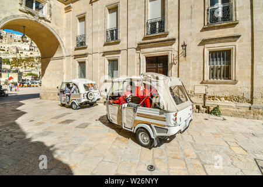
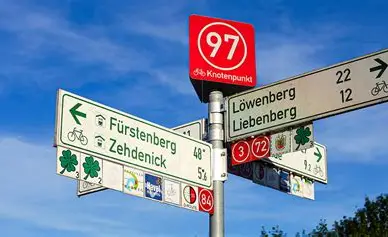
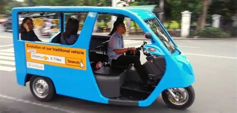
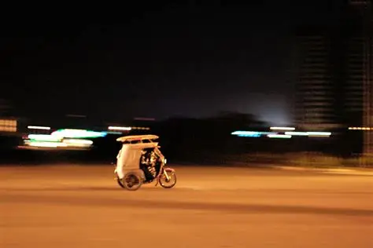
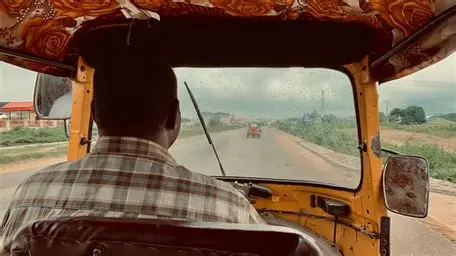
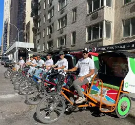
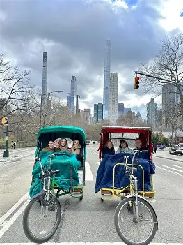
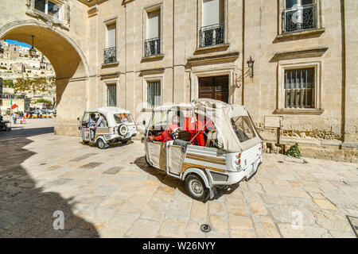
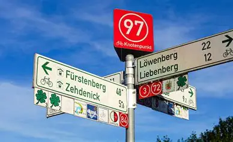
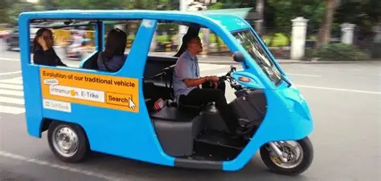